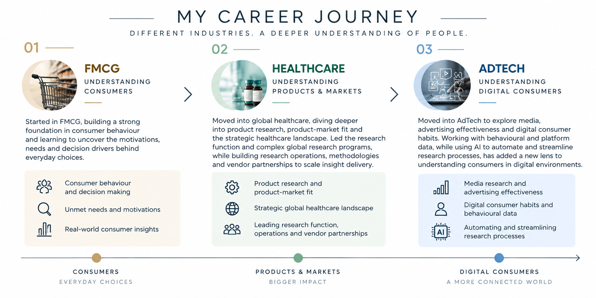

12+ Years Experience | 5+ Years in UX Research
Dynamic and results-driven researcher experienced in leading user & customer-centric research initiatives, driving product innovation and shaping strategy across Healthcare, AdTech, Fintech, eCommerce, and Consumer Goods.

I bridge the gap between user needs and business strategy through rigorous research and compelling storytelling.
I believe great research doesn't just answer questions — it changes how teams think about their users. Over 12 years, I've led research initiatives that have directly influenced product roadmaps, redesigned customer experiences, and uncovered market opportunities worth millions.
My strength lies in integrating multiple data sources — primary research, secondary research, and data analytics — to present comprehensive, actionable insights that stakeholders can act on immediately.
Currently, I'm leveraging Generative AI tools to enhance survey frameworks and automate reporting, making research faster without sacrificing depth. I also write about research methodology and industry trends on Substack.
Independent & prioritize projects based on their impact
Able to quickly spot relevant patterns and issues
Work hard and possess a great deal of stamina
A comprehensive toolkit built over 12 years of hands-on research across industries.
A decade of building research capabilities and driving product innovation across global organizations.
InMobi
US Pharmacopeia
Optimal Strategix Group
RS Market Research Solutions (Intage Inc., Japan)
Real-world research projects that drove product decisions and business impact. View detailed work on my Behance portfolio.
Self-Initiated Project | Healthcare UX
CloudNine Hospital's app offers online services (consultation booking, lab tests, scans, medicine orders) but users faced friction during the most critical task — booking an in-person consultation. The app needed a systematic usability audit to identify design problems against established heuristics.
Solo researcher conducting a full heuristic evaluation. Evaluated the "Booking in-person consultation" task flow against Jakob Nielsen's 10 usability heuristics, assigning severity ratings (0–4) to each finding.
Even well-established healthcare apps have fundamental usability gaps. The "PayNow" mislabel was a classic example of how a single button can create false expectations and drive users away. Severity ratings helped stakeholders prioritize fixes by business risk, not just design preference.
View Full Project on Behance →US Pharmacopeia | 2022 – 2023
Healthcare professionals struggled to access and navigate USP's digital reference standards platform, leading to low adoption and frustrated users seeking competitor solutions.
Led end-to-end UX research as Senior Manager, Global Market Insights. Managed a cross-functional team of researchers and collaborated with product and design teams.
Segmenting users by role (not just title) was critical. What a lab tech needs at 9 AM differs drastically from what a quality manager needs at 5 PM.
InMobi | 2025 – Present
Advertisers lacked clear understanding of how InMobi's mobile ad campaigns influenced brand perception and user behavior beyond click-through rates.
Manager, Consumer Insights. Designed and executed brand lift and attitude-behaviour studies. Leveraged GenAI to automate reporting and enhance survey frameworks.
Automating sentiment analysis with GenAI saved 60% of coding time, but human oversight remained essential for nuanced emotional responses.
Optimal Strategix Group | 2016 – 2018
A pharmaceutical client needed to understand why their new drug wasn't achieving projected market uptake despite strong clinical trial results.
Senior Associate leading full-cycle CX research. Managed qualitative and quantitative studies across multiple markets to inform design and customer strategy.
Never underestimate the "middleman" in healthcare. The patient journey has more stakeholders than you initially map — always dig deeper.
I write about UX research methodology, industry trends, and the intersection of technology and human behavior on Substack.
A calorie-tracking app made me switch from chai to black coffee (only temporarily though). Exploring how consumer health tech is outpacing healthcare infrastructure — and what that means for UX researchers designing in this space.
Read on Substack →Long before digital impressions were counted, shopkeepers at local melas would hire someone to shout out loud. Drawing parallels between traditional market research and modern UX research methods for sensitive topics.
Read on Substack →Deep-dive research projects with full methodology, artifacts, and deliverables. Click any project to view on Behance.
UX Research Project — End-to-end persona creation process with research methodology and validation.
Market Research & UX Research Project — Full evaluation of an onboarding flow with actionable redesign recommendations.
Mixed-methods concept validation study combining qualitative and quantitative approaches.
Systematic heuristic evaluation of a healthcare app identifying usability violations and priority fixes.
Strategic research project uncovering what really matters for users when evolving legacy products.
Continuous learning to stay at the forefront of research methodology and design thinking.
JIMS, Rohini, Delhi | 2012
Google UX Design Certificate
Interaction Design Foundation (IxDF)
Georgia Tech
University of Amsterdam
Interested in collaborating or want to discuss research opportunities? Reach out — I'd love to hear from you.